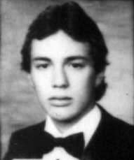
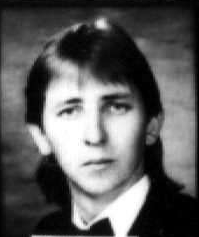
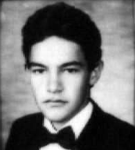

1986
TURMA PROFESSOR ALACIR VALENÇA SOARES

ANTONIO C. COSMO |
ARTUR BITTENCOURT JR |
CLEACIR I. DALL’ AGNOLL |
DELCIDES GONÇALVES |
JOÃO C. NEVES |
JOÃO P. M. BIDA |
JOSÉ FERNANDO PIAIA |
JOSÉ PIONTKOSKI |
 |
|||
JOSUÉ R. SILVÉRIO |
LUÍZ CARLOS ABREU AMARAL |
LUÍZ MARCEL P. MILA |
MANOEL V. MACHADO |
METÓDIO SABATOVSKI |
MILTON L. ZUCCHI |
PAULO R. S. DE OLIVEIRA |
PAULO S. DRANCA |
 |
 |
||
ROBERTO G. PLEWKA |
RONALDO LAMAG |
SÉRGIO G. R. DA SILVA |
WILSON JAIRO R. CALDAS |